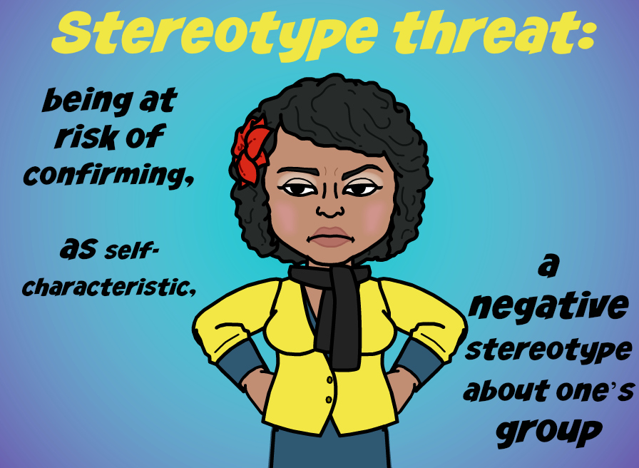

In the past, I've joked that I'm the ultimate Minority: a Short Thick Queer Blaxican Lesbian, from a low-income family. Surely there are prividges I still have, like being an able-bodied, CIS-gendered US citizen with a college-education. Holding so many identities with you can be a complicated mix of pride and fear, and learning about Stereotype Threat helps illustrate some ways those fears have threatened to keep me back.
Stereotype Threat
What is Stereotype Threat?
From the interwebs:
Stereotype threat refers to being at risk of confirming, as self-characteristic, a negative stereotype about one's group (Steele & Aronson, 1995). This term was first used by Steele and Aronson (1995) who showed in several experiments that Black college freshmen and sophomores performed more poorly on standardized tests than White students when their race was emphasized. When race was not emphasized, however, Black students performed better and equivalently with White students. The results showed that performance in academic contexts can be harmed by the awareness that one's behavior might be viewed through the lens of racial stereotypes.
How does Stereotype Threat work?

Stereotype Threat is something just about anyone can experience. In the above example, it was black colllege freshman, but if anyone was in an environment that they were in fear of being negatively stereotyped (be they any race, creed, gender, sexuality, ability etc), you'll find Stereotype Threat. Some symptoms I resonated with was the immediate need to count other people in the room, and see if I was "the only one". Another symptom is negative self-talk, or the feeling like I'm doomed to ail, taking extra energy away from the task at hand. In some studies, even "positive reinforcement" can hinder performance, by driving home the idea that your success or your step towards success is not the norm for "people like you". The other term that came up was "Imposter Syndrome" which I often feel in my work, feeling as if I haven't accomplished or learned "enough" to be able to belong.
What are consequences of Stereotype Threat?
Some of the consequences include extra stress, anxiety, depression, impeded performance, self-defeating tasks like less effort, and in some cases Overcompensating for the stereotype to thwart the threat. One example from my recent work at DBC involves overcompensating. Sometimes, when I pair with men, I feel like I need to make sure I voice my opinions strongly, and keep up with the challenge to show my intelligence, so as to keep from the "quiet woman" stereotype from getting in the way of me succeeding at DBC. After one of my GPS sessions, I got feedback from the guide that I was dominating the conversation with my pair, and I should be more cognizant with soft-spoken partners. It was a shock to hear, because in my mind, I was trying to show my competency in the work, and I ended up dominating the conversation.
Coping with Stereotype Threat
How do you cope with Stereotype Threat?
Some of the ways I've been combatting Stereotype threat all stem from learning more about self-care. I find ways to talk myself out of negative self-talk, write myself love letters when I'm feeling low or uninspired in my work, think about my accomplishments thus far, and remind myself what brings me to where I am in my life: my family, my community, and my ambition to Git It!
What also helps me is getting feedback and encouragement from my peers, my community, and my family. PLEASE keep giving me these things, by way of reaching out and having conversations aboout how things are going; READ my posts! Ask me questions! Share pride in my work, give me pointers, and encourage me to keep going!
What are some ways to combat Stereotype Threat?
Besides my own tactics above, There are examples that those who did research studies on Stereotype Threat that help combat it. There was a study that showed that focusing on one value can affect Stereotype Threat positively.I think not only being able to find "your people" (whoever they may be, your fellow rockers, fellow queerfolk, fellow grammar-snobs, etc.) to decompress, and to feel supported, but also to understand your individualism, you're not everyone, you're not just the identities you are made from, but you are individually you from what you've built wiht your own mind, heart, soul and hands.
What can others do to help?
It's a complicated road, but we can all help alleviate others from Stereotype threat!
- Leadership can focus on achievement and giving everyone the same standards.
- Consider the impact your words, actions, gestures, etc. have on others; even your mere presence, and make places welcoming and accessible.
- Listen to yourself, and listen to others knowing they are experts in their own experience.
- Understand that Stereotype has a lot to do with belonging, be aware that others are looking for cues to indicate that they can really be themselves, and thrive.
Resources
Here's a list of the resources, articles, and other's posts that helped inform this post of mine, and I encourage you to take a gander!
- Reducing Stereotype Threat
- Countering Stereotype Threat
- Don't be THAT girl: Black women and Stereotype Threat
- How Stereotypes Can Drive Women To Quit Science
- The other side of Diversity by @ericaJoy
 Tweet
Like
Tweet
Like
 Plus
Plus